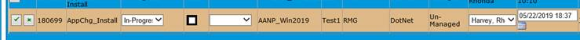
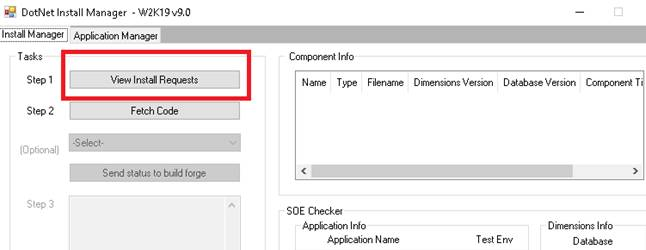
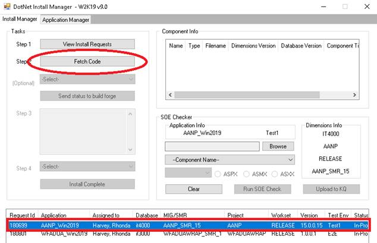
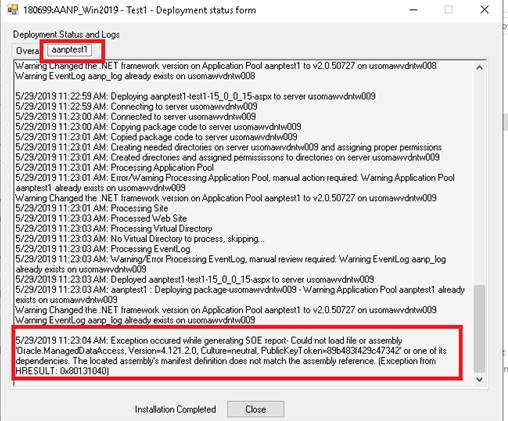
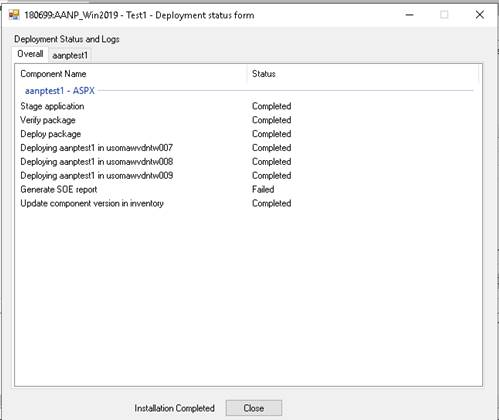
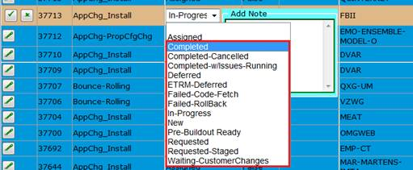

Quick Steps without pictures:
- Log into ETS portal http://et.dev.qintra.com/stsclient/Login.aspx; assign ticket, update status In-Progress
- Log into the 2019 stager usomawvdntst01.test.intranet
Navigate to D:\Inetpub\AdminScripts\DotNetInstallManager_Win2019
Right click on DotNetInstallManager.exe and run as administrator
Click View Install requests, highlight request, click Fetch Code, click yes - Check Inventory http://et.dev.qintra.com/etsinvmtc/Inventory/Applications.aspx; verify version & urls work
- Execute SOE checker tool as administrator - D:\Inetpub\AdminScripts\SOE Checker v3.1\SOEChecker.exe
- Execute KleanIT as administrator – D:\inetpub\AdminScripts\KleanIT.exe Note: if you need to delete only specific version – like for a rollback to earlier version and need to delete higher version use D:\Inetpub\AdminScripts\CleanupUtility_2019\CleanupUtility.exe
- Log into ETS portal http://et.dev.qintra.com/stsclient/Login.aspx; select your ticket;
There are several close statuses based on the outcome of the install.
Choose the appropriate one. If no issues, choose Completed. - Log off the 2019 stager usomawvdntst01.test.intranet
Steps for Automated install using DotNetInstallManager
- Log into ETS portal http://et.dev.qintra.com/stsclient/Login.aspx; assign ticket, update status In-Progress
- Log into the 2019 stager usomawvdntst01.test.intranet and Navigate to D:\Inetpub\AdminScripts\TestDotnetIM\10.10
Right click on DotNetInstallManager.exe and run as administrator
- Click on View Install Request
- Click on install request that assigned to your name and click on fetech code as shown below.
- If you got error status vs complete status, you can click the sitename aanptest1 tab for details on the install errors.
- The files are fetched to D:\Applications on the stager and after successful deployement click on close as Installation is completed.
- Check the URLs in Inventory and close the ticket.





